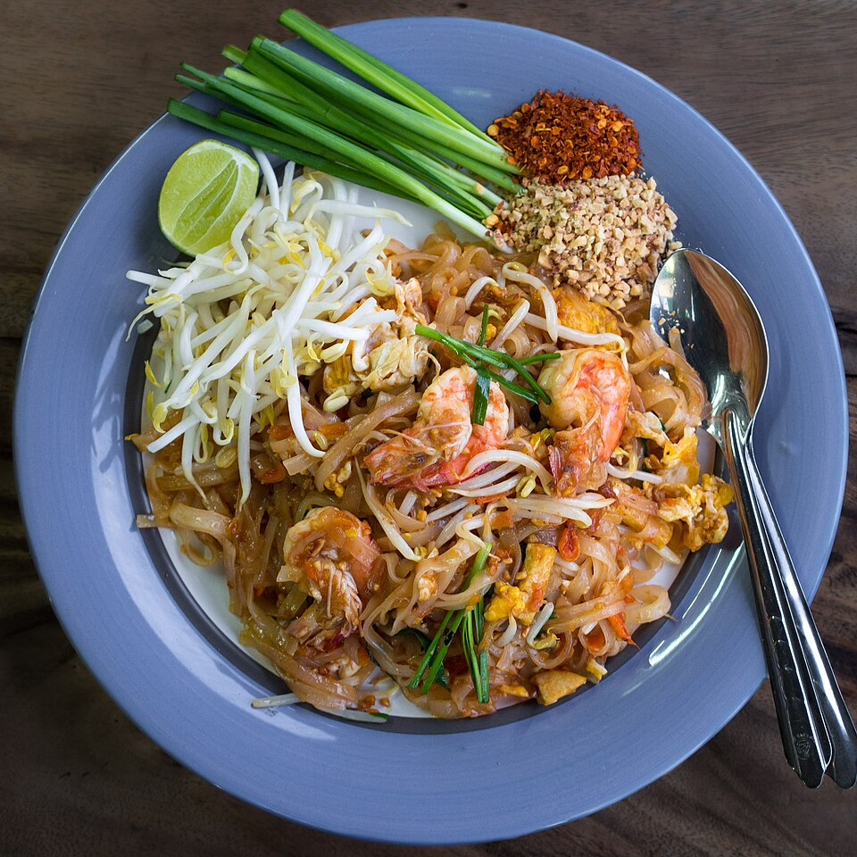

Pad Thai

Description
A popular Thai street food dish typically consisting of
fried rice noodles, shrimp, peanuts, lime, bean sprouts,
and egg, pad Thai has become a staple dish at many Thai
restaurants across the United States.
Fun fact, the Thai government has utilized its popularity
as a way of spreading Thai culture by supporting the
establishment of Thai restaurants across the world beginning
in the early 2000s.
Ingredients
- Rice noodles
- Eggs
- Garlic
- Your choice of protein: shrimp, chicken, beef, tofu, etc
- Bean sprouts
- Red bell pepper
- Green onion
- Peanuts
- Sauce ingredients
- Fish sauce
- Dark soy sauce
- Light brown sugar
- Rice vinegar
- Sriracha hot sauce
- Creamy peanut butter
- Optional: tamarind sauce
Instructions
- Presoak the rice noodles in boiling water for 20 to 30 minutes and cook according to packet instructions
- Combine the ingredients for the sauce and beat the eggs before putitng them to the side
- Stir fry your protein, garlic, green onion, and bell peppers
- Add the eggs and scramble them until cooked
- Finally add the cooked rice noodles, sauce, bean sprouts, and peanuts, and combine all components.
- Garnish with additional green onion, lime juice, and peanuts
Home